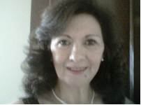
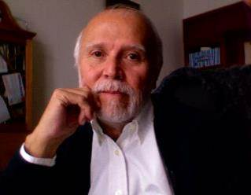

|  |
Dra. Rocío Sánchez Caballero
Directora de la escuela de Posgrado de Homeopatía de México.
Maestría en Homeopatía
Imparte cursos en Homeopatía de México desde 1983.
profesora de Clínica Integral homeopática. Nitidez Sintomática. materia Médica Miasmática.
Ha impartido cursos en diversos estados de la República Mexicana así como en el extranjero desde 1988
Ha publicado Apuntes sobre Materia Médica Miasmática para los alumnos de Homeopatía de México y diversos artículos en los Congresos y Asambleas Nacionales y extranjeros. |
|  |
Dr. René Torres García
Egresado de la Escuela Nacional de Medicina y Homeopatia en 1975 y desde entonces ejerce consulta medica en forma privada y en dispensario.
Egresado de la especialidad en medicina en la Escuela de Posgrado de Homeopatía de México A.c. miembro activo de la asociación desde 1980
Profesor de Doctrina homeopática y clínica con paciente desde hace 30 años en la Escuela de posgrado de Homeopatía de México A.C.
Miembro del Consejo de HMAC.
|
Dr. Jaime Andrade Montaño.
(E. L. H. M. Expresidente de HMAC).
Dra. Ana María Carballo Quiroz.
(E. N. M. H. Consejera de HMAC).
Dra. Patricia Carballo Quiroz.
(E. L. H. M. Catedrática de la
Escuela de Posgrado de HMAC).
Dra. Claudia Cárdenas Demay.
(Presidenta del Colegio de Médicos
Homeópatas del Estado de Hidalgo).
Dr. Carlos López García.
(Ex Presidente del Colegio de Medicos
Homeopatas del Estado de Puebla).
Dr. José Matuk Kanan.
(Presidente de la Liga Médico
Homeopática Internacional).
Dr. Raúl Morales López.
(Presidente del Colegio de Médicos
Homeópatas del Estado de Oaxaca).
Dra. María Eugenia Pulido Alvarez.
(E. N. M. H. Presidenta del C. O. M. E. C. H).
Dr. Federico Orozco Aguirre.
(Guadalajara, Jalisco)
Dr. Vicente Rosas Landa.
(E. N. M. H. Presidente del XXV Congreso
Nacional de Medicina Homeopática).
Dr. Antonio Sánchez Caballero.
(Director Técnico de Homeopatía de
México A.C. Vicepresidente por
México ante la L. M. H. I).
Dr. Guillermo Sánchez Caballero.
(E. L. H. M. Expresidente del Colegio de
Médicos Homeópatas del Estado de Hidalgo).
Dra. Rosario Sánchez Caballero.
(E. N. M. H. Directora de la Escuela de
Posgrado de Homeopatía de México).
Dra. Josefina Sánchez Reséndiz.
(E. N. M. H. Presidenta Fundadora del
C. C. N. M. H. A. C).
Dra. Julissa Segura Urbano.
(Presidenta del Colegio de Medicos
Homeopatas del Estado de Puebla).
Dr. René Torres García.
(E. N. M. H. Miembro del Consejo de
Homeopatía de México A. C).
Dr. Alejandro Urrutia Solórzano.
(Ex Presidente del Colegio de Médicos
Homeópatas del Estado de Hidalgo).
Dra. Lourdes Cruz Juárez.
(ENMyH)
Dr. Jaime Brito Zaragoza.
(HMAC. Puebla, Puebla)
|